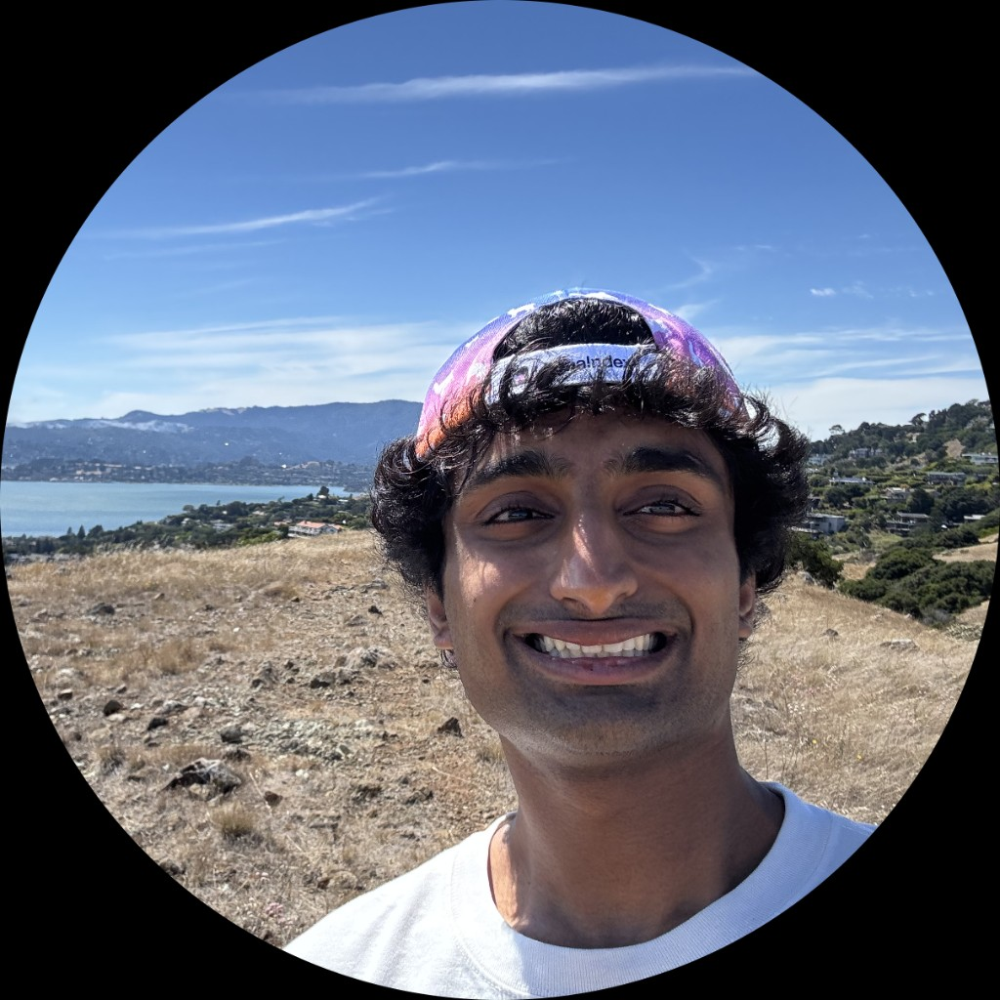

Hi, I'm Sanjay, a student researcher and Junior at Purdue majoring in Computer Engineering. I'm currently working on foundational models, ML compiler optimizations, knowledge graphs, and applied AI. My research is concentrated in AI security, multi-agent collaboration, and multi-objective post-training. Outside of engineering, I enjoy playing basketball, lifting weights, and following Formula 1.
A CLI and terminal UI security auditor for local Model Context Protocol (MCP) servers. Combines dual-engine static analysis (Semgrep AST/taint analysis and LLM-powered tool poisoning/shadowing detection across W1 to W10 vulnerability taxonomies) with dynamic execution analysis inside a Lima VM sandbox. Uses eBPF kernel tracing across cgroups to monitor file, process, and network syscalls, detecting hidden privileges, tool hijacks, and leaking environment/file canaries in JSON-RPC responses.
Pretrained a 320M-parameter transformer on 10.4B tokens using GQA, SwiGLU, RoPE, and a WSD learning rate schedule, for about $50 on a rented H100. Diagnosed weak performance on PIQA and ARC-easy and ran a targeted $1 mid-training pass mixing replay data with reasoning-focused sources, raising PIQA from 55.5 to 67.7 and ARC-easy from 37.7 to 56.4. Fine-tuned on SmolTalk for a total cost of $60, beating GPT-2 on ARC-easy and ARC-challenge at a comparable token budget.
A high-performance local retrieval engine for instant semantic search across text, images, audio, and video. Backbone is Qwen3-VL-Embedding-2B, mapping all modalities into a unified 2048-dim vector space. Audio is handled via a CLAP-to-Qwen adapter, a learned 2-layer MLP trained with contrastive InfoNCE loss on AudioSetCaps. A filesystem watchdog daemon auto-indexes files using BLAKE3 change detection, and results are bundled via hybrid scoring combining embedding similarity, temporal proximity, and filename Jaccard.
A GPU kernel fusion study, fusing element-wise Add and ReLU into a single kernel to eliminate the global memory round-trip between operations. Benchmarked custom CUDA, Triton, and torch.compile on NVIDIA Nsight Systems. Profiling showed torch.compile via Triton reads inputs once into SRAM, computes add and clamp, and writes once to VRAM, rivaling hand-written CUDA while bypassing the memory bandwidth bottleneck entirely.
A full-stack SaaS that ingests Gmail newsletters and delivers a single AI-generated daily digest with audio playback. Celery orchestrates parallel summarization, processing multiple newsletters concurrently before synthesizing them into a cohesive narrative. Shipped with ElevenLabs TTS, daily email delivery, and 23+ production deploys.